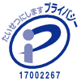

個人情報保護方針
株式会社キャリアプラス(以下、「当社」という。)は、ヒューマンリソーシズ事業、コールセンター受託運営サービス事業を行っております。
当社は、当社の事業の用に供するすべての個人情報を適切に取扱うため、当社全従業者が遵守すべき行動基準として本個人情報保護方針を定め、その遵守の徹底を図ることといたします。
- 当社は、個人情報の取扱いに関する法令、国が定める指針その他の規範を遵守します。そのため、日本産業規格「個人情報保護マネジメントシステム — 要求事項」(JIS Q 15001)に準拠した個人情報保護マネジメントシステムを策定し、適切に運用いたします。
- 当社は、事業の内容及び規模を考慮した適切な個人情報の取得、利用及び提供を行います。それには特定された利用目的の達成に必要な範囲を超えた個人情報の取扱いを行わないこと及びそのための措置を講じることを含みます。
- 当社は、個人情報の取扱いの全部又は一部を委託する場合は、その取扱いを委託された個人情報の安全管理が図られるよう、委託を受けた者に対する必要かつ適切な監督を行います。
- 当社は、本人の同意がある場合又は法令に基づく場合を除き、個人情報を第三者に提供することはありません。
- 当社は、個人情報の漏えい、滅失又はき損の防止及び是正のための措置を講じます。
- 当社は、個人情報の取扱いに関する苦情及び相談への適切かつ迅速な対応に努めます。また、当社の個人情報保護方針の内容に関するお問合せ及び、当社が保有する保有個人データの開示等の請求等 (利用目的の通知、開示、訂正・追加又は削除、利用又は提供の停止）を受け付けます。当社の個人情報保護方針の内容に関するお問合せ及び、開示等の請求等の手続きにつきましては、以下の「個人情報苦情及び相談窓口」までご連絡ください。
- 当社は、個人情報保護マネジメントシステムの継続的改善を行ないます。
【個人情報苦情及び相談窓口】
株式会社キャリアプラス
個人情報保護管理者（代表取締役）
TEL：03-6682-4660
メール：privacyinfo-cap@career-plus.co.jp
制定年月日 2013年6月1日
最終改訂日 2022年7月1日
株式会社キャリアプラス
代表取締役 山本賢一
当社における個人情報の取扱いについて
(個人情報保護法及びJISに基づく公表事項及び本人が容易に知り得る状態に置く事項)
1.個人情報の利用目的(間接的に取得するもの、又は書面以外で取得するものについて)
（1）当社への採用選考を希望される方に関する個人情報(他社求人サイト様から取得した情報、提携先から取得した情報、オープンループ・グループ企業各社から取得した情報を含みます。)
- お仕事紹介のため
- お仕事情報提供のため
- 採用選考に関する手続きのため
- お問合せ内容の確認、回答のため
（2）社員に関する個人情報
- 人事管理の手続きのため
- 給与管理の手続きのため
- 雇用保険、社会保険の手続きのため
- お問合せ内容の確認、回答のため
（3）ヒューマンリソーシズ事業に関する個人情報
- 登録手続きのため
- お仕事紹介のため
- お仕事情報提供のため
- 給与等の管理のため
- 福利厚生のご案内のため
- 各種セミナーのご案内のため
（4）電話でお問合せいただいた方の個人情報
（5）BPO（ビジネスプロセス アウトソーシング）事業により委託された個人情報
※なお、個別に利用目的を明示又は通知する場合には、その利用目的によるものとします。
※すべての「保有個人データ」の利用目的や「開示等の請求等」の手続き、「保有個人データの安全管理のために講じた措置」等、「保有個人データ又は第三者提供記録に関するに関する事項の周知」事項につきましては、以下の「個人情報苦情及び相談窓口」までご連絡ください。遅滞なく回答いたします。
2.開示等の請求等に応じる手続き
- 開示等の請求等の申し出先
株式会社キャリアプラス
〒160-0022 東京都新宿区新宿4-3-17 FORECAST新宿SOUTH7階
TEL：03-6682-4660 e-mail：privacyinfo-cap@career-plus.co.jp
- 開示等の請求等に際して提出すべき書面の様式
- 概ね過去１年において勤務実績のある登録スタッフの方
開示等の請求を行う場合には、下記Bによる方法の他、お電話、メールにて開示等の請求をすることができます。お電話、メールにて開示等の請求を行う場合には、3（a)開示等の請求等の申し出先に氏名、住所、生年月日、連絡先、スタッフコードをご連絡ください。それにより本人確認をさせていただきます。
- 上記A以外の方
開示等の請求を行う場合は、当社指定の様式を以下からダウンロードしていただき、所定の事項を全てご記入の上、下記（c）本人確認書類とともにご郵送ください。「開示等の請求等申請書」（PDF）
- 代理人による場合
開示等の請求をされる方が、開示等の請求をすることにつき本人が委任した代理人である場合は、上記Bの「開示等の請求等申請書」に加え、以下の「開示等の請求等の委任状」を同封してください。
「開示等の請求等委任状」（PDF）
- 本人確認書類
運転免許証、旅券（パスポート）、健康保険証、年金手帳、その他本人を証明するもののコピー。
※上記本人確認書類の中で「本籍地」が明記されている場合は、「本籍地」を黒く塗りつぶし判読できない状態にしてご郵送ください。
- 開示等の請求等に対する回答方法
申請者ご本人に対して、速やかにメール、郵便、電話により回答いたします。なお、本人確認ができない等、開示等に対応できない場合は、その旨と理由をご連絡いたします。
- 開示等の請求等により取得した個人情報の取扱について
【利用目的】
ご請求時に頂いた個人情報は、開示等への対応にのみ使用いたします。
【第三者提供、委託について】
ご請求時に頂いた個人情報は、第三者に提供、委託することはございません。
【情報のご提供について】
当社への個人情報の提供は、すべて任意となっております。ただし、当社が依頼する情報の提供がない場合、適正な開示等ができない場合があります。
【個人情報の返却について】
本人確認または代理人確認のためにお預かりした個人情報は、対応後直ちに廃棄いたします。
3.「問い合わせ・苦情」の受付窓口に関する事項
個人情報に関する問い合わせ・苦情については、下記までお申し出ください。
＜個人情報苦情及び相談窓口＞
〒160-0022 東京都新宿区新宿4-3-17 FORECAST新宿SOUTH7階
株式会社キャリアプラス
個人情報保護管理者：（代表取締役）
TEL：03-6682-4660
FAX：03-6682-4661
e-mail：privacyinfo-cap@career-plus.co.jp
(受付時間 月曜日～金曜日 祝祭日を除く 10時～16時)
※直接ご来社いただいてのお申し出はお受けいたしかねますので予めご了承ください。
4.認定個人情報保護団体の名称及び、苦情の解決の申し出先について
当社は、認定個人情報保護団体の対象事業者ではございません。
